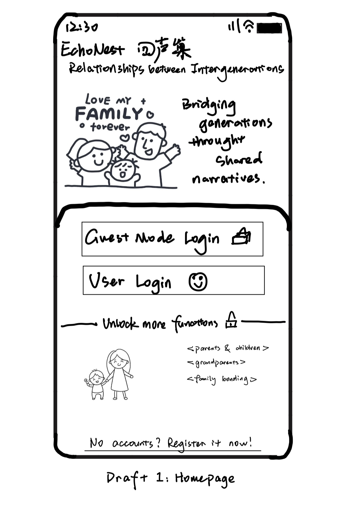
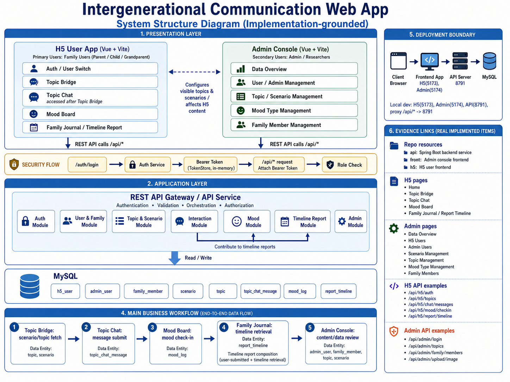
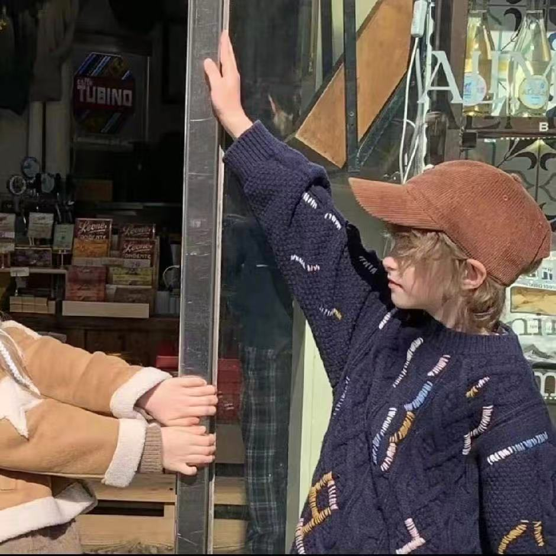
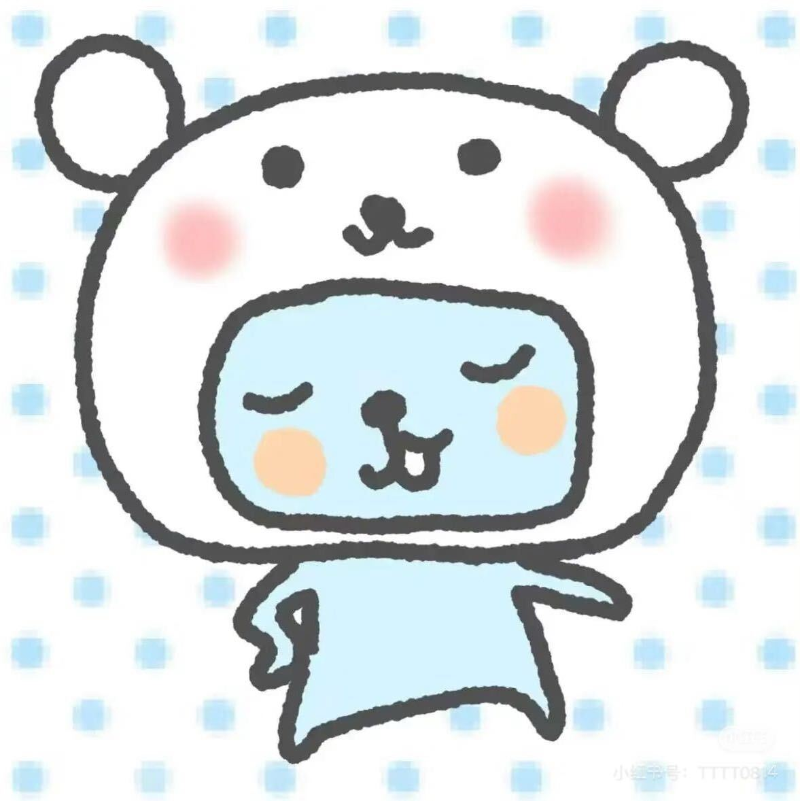
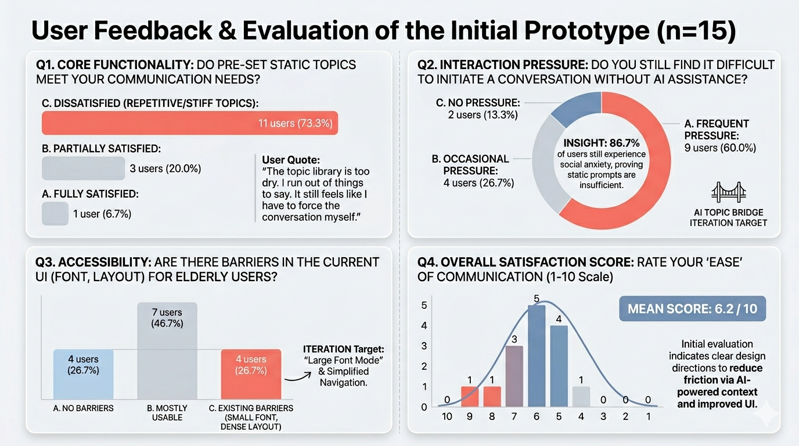

Thoughtful conversation prompts


01
Motivation & Research
This section explains why we chose the intergenerational relationship track and what gaps we found in academic research and existing family communication products.
Designing connection, not just communication efficiency
Our group chose Relation between Generations because we wanted to address a human-centered problem that is both common and emotionally meaningful: the weakening of communication across generations. We are especially interested in this topic because many parent-child and grandparent-grandchild relationships are not defined by open conflict, but by a quieter problem. Conversations often remain superficial, stop easily, or fail to build real mutual understanding. In many families, people care deeply about one another, yet they lack shared topics, low-pressure ways to communicate, and opportunities to understand each other's everyday lives.
We chose this track because it allows us to design for connection rather than only efficiency. Compared with general communication tools, this topic gives us a chance to explore how playful and lightweight interactions can support empathy, curiosity, and long-term closeness across age groups. We are also interested in the challenge of creating a mobile-first experience that remains accessible to both younger and older users in hybrid family contexts.
The Gap
Four academic papers & four commercial products
Each source is reviewed in its own card. We summarise what it did well and what it still missed for our intergenerational relationship context.
Technologies for fostering intergenerational connectivity and relationships: Scoping review and emergent concepts
Reis et al.
Academic Paper · Technology landscape review
✓ Did Well
- Mapped the main technology directions in intergenerational digital support.
- Showed that storytelling, asynchronous exchange, and shared activities can all strengthen connection.
- Provided a broad research foundation for thinking beyond one single communication tool.
✕ Missed
- Stayed at a review level and offered less guidance for a concrete everyday product flow.
- Did not unify topic initiation, life exchange, and memory building into one interaction model.
- Offered limited insight into lightweight, repeated family use over time.
Designing Intergenerational Mobile Storytelling
Druin et al.
Academic Paper · Intergenerational mobile storytelling
✓ Did Well
- Used participatory design to ground the system in real user perspectives.
- Highlighted storytelling as a strong emotional bridge across generations.
- Emphasised co-creation and empathy rather than one-way content delivery.
✕ Missed
- Focused more on story creation than on quick, low-pressure everyday contact.
- Offered less support for casual conversation starters before a deeper story is formed.
- Did not fully connect storytelling to a longer-term family ritual or memory archive.
Promoting intergenerational communication through location-based asynchronous video communication
Bentley et al.
Academic Paper · Asynchronous family video communication
✓ Did Well
- Tested the concept with real participants through field evaluation.
- Showed that asynchronous video reduces scheduling pressure for family connection.
- Supported richer emotional presence than short text messages alone.
✕ Missed
- Focused mainly on sharing clips rather than encouraging reflective dialogue.
- Risked becoming one-way media exchange instead of balanced co-creation.
- Did not strongly structure shared memories after the interaction happened.
Designing Collaborative Technology for Intergenerational Social Play over Distance
Yuan et al.
Academic Paper · Collaborative parent-child play
✓ Did Well
- Used design probes across many families to study real interaction preferences.
- Demonstrated that collaborative play can trigger higher-quality conversation.
- Explained how remote co-play creates motivation and emotional closeness.
✕ Missed
- Focused on play moments more than the broader ecosystem of family communication.
- Gave less attention to the accessibility needs of older adults such as grandparents.
- Did not integrate playful interaction with long-term memory preservation.
Marco Polo
Commercial Product · Asynchronous video messaging
✓ Did Well
- Lowered the timing barrier by making family contact asynchronous.
- Created a warmer sense of presence than basic chat tools.
- Worked well for fragmented schedules when family members cannot reply at once.
✕ Missed
- Acts mainly as a communication channel rather than a guided understanding tool.
- Provides limited scaffolding for playful prompts or reflective questions.
- Does not strongly turn exchanges into structured shared memories.
FamilyAlbum
Commercial Product · Family photo and video archive
✓ Did Well
- Made family media safe, easy to organise, and easy to revisit.
- Supported memory sharing across multiple family members.
- Proved that digital family memory preservation has strong long-term value.
✕ Missed
- Functions more like a repository than an active conversation catalyst.
- Offers limited emotional guidance or playful interaction during sharing.
- Does not actively help two generations compare perspectives or experiences.
StoryCorps
Commercial Product · Guided questions and archived stories
✓ Did Well
- Uses guided prompts to structure meaningful conversation.
- Supports recording and archiving so stories can be preserved over time.
- Transforms spoken memories into valuable long-term family artifacts.
✕ Missed
- Feels closer to a formal interview tool than a lightweight everyday companion.
- Can be high-effort for users who only want to start with small, casual interactions.
- Offers less playful reciprocity during ongoing family exchange.
Caribu
Commercial Product · Video call with shared activities
✓ Did Well
- Combines video communication with shared reading, drawing, and games.
- Creates a stronger sense of remote companionship through doing something together.
- Shows how playful joint activity can make connection feel more natural.
✕ Missed
- Focuses mainly on synchronous sessions, which can be hard for fragmented schedules.
- Provides less support for small asynchronous touchpoints between shared sessions.
- Does not strongly preserve those moments as an evolving family memory system.
Our opportunity is to design a gentle, playful bridge that makes starting a
conversation easier and makes family memories easier to grow over time.
Primary and secondary users
The personas below represent two sides of the same intergenerational relationship: a young adult who wants communication to feel more natural, and an older family member who wants to participate but may feel uncertain with digital tools.
Student Persona
01

Older Adult Persona
02

02
User Requirements
This section will connect user pain points to design requirements and show evidence from interviews or observations.
Survey insights from 42 participants
Before translating our findings into requirements, we reviewed questionnaire data to understand current communication patterns, recurring barriers, preferred low-pressure interactions, and concerns around shared family memory archiving.

The survey suggests that many family conversations remain routine and struggle to move into deeper exchange, especially when participants lack shared context or worry about sounding intrusive.
- Low-pressure interaction matters: asynchronous life fragments and guided prompts appear more approachable than high-effort conversation formats.
- Memory tools need care: privacy, fragmented content, and complexity for older users should be considered in the final design direction.
Current communication journey
The following journey map captures how intergenerational conversations often begin with care, but break down because of awkward openings, mismatched communication styles, and the lack of a shared playful bridge.

Interview and observation evidence
These field photos document our group interviews, contextual observations, and collaborative research process while exploring intergenerational communication patterns.
03
Ideation & Alternatives
This section records how the group explored different playful interaction ideas, compared alternatives, and selected the most promising direction.
Timeline
Week-by-week project development
This timeline follows the project from topic definition to final delivery, with each week shown as its own step on the design journey rather than one long panel.
Rapid UI sketches
These hand-drawn sketches were extracted from our ideation sheets to show how the team compared nine lightweight interface directions before narrowing the concept.
Sketch Gallery
1 of 9

Homepage entry
An opening screen that balances quick guest access with a clearer path into family features.
Comparing possible system directions
The following alternatives were explored during ideation, but each one was later set aside after comparing its value against the final concept direction.
"Life Window"
A concept for exchanging daily life through one very short piece of content, allowing family members to share lightweight updates in a simple and routine way.
Why it was rejected: It overlapped too heavily with Topic Bridge and could create pressure to respond, adding unnecessary effort to a low-pressure communication experience.
"Double Binding / Family Pairing"
A concept where parent-child or grandparent-grandchild relationships would be formally paired first before users could enter later interactions and feature flows.
Why it was rejected: It felt more like an account mechanism than a core user experience, and the registration plus pairing process would make first-time use more complicated.
"Light Reminder Mechanism"
A concept that used gentle prompts and reminders to encourage users to continue interacting and maintain regular communication over time.
Why it was rejected: Its standalone value was relatively weak, and if reminder frequency was not controlled carefully, it could feel intrusive and reduce the intended light, comfortable experience.
Low-Fi Prototype
Open the low-fidelity prototype walkthrough hosted on Figma.
Open Low-Fi Prototype
04
Technical Implementation
This section explains how the product prototype is structured and demonstrates the three core features through interactive screen walkthroughs.
Hosted product link
This live H5 web prototype is deployed on Vercel. It demonstrates the main product flow of our intergenerational communication system, including Topic Bridge, Mood Board, and Family Journal.
Implementation-grounded system structure
The diagram below summarises the actual structure of our intergenerational communication web app.

Presentation and management are separated but connected
The H5 user app serves family users through Auth, Topic Bridge, Topic Chat, Mood Board, and Family Journal. In parallel, the admin console gives researchers and administrators control over topics, scenarios, mood types, family members, and user management. This separation lets the user-facing experience stay light while still allowing the content model behind it to be updated and maintained.
Backend modules reflect the core interaction logic
The API service is organised into dedicated modules for authentication, users and families, topics and scenarios, interaction data, mood logs, timeline reports, and admin operations. This mirrors the product structure shown elsewhere in the portfolio: conversations start from guided topics, continue through chat and mood check-ins, and eventually contribute to timeline-style family reports.
Security, deployment, and workflow are built into the design
The diagram also makes the operational layer visible: browser requests flow to the H5 or admin frontend, pass through the API server, and persist in MySQL. Login requests generate a bearer token, later API calls attach that token, and role checks protect different admin and family-user routes. At the business level, the main sequence runs from topic retrieval to topic chat, mood logging, timeline retrieval, and then content review through the admin side.
Vue 3
Vite
Vue Router
Axios
REST API
Spring Boot API
MySQL
Admin Console
Vercel Deployment
From interface to interaction data
Frontend Structure
The product uses Vue views, reusable components, layouts, and global styles to organise a mobile-first H5 interface.
API Communication
Axios modules connect the frontend to user and admin API routes, including login, topics, mood check-ins, weekly mood data, reports, and content management.
Authentication
After login, the returned token is stored locally and attached to later requests through the Authorization Bearer header.
Current contribution overview by member
Each member took ownership of a different part of the project, from research and architecture planning to visual design, implementation, and testing.

Hengxi Liu
Requirement Analysis & Testing
Main Contribution
Researched questionnaire results, analyzed user requirements, and conducted product testing.
Jingchen Yang
UI/UX & Portfolio Design
Main Contribution
Designed UI layouts and visual assets, prepared high-fidelity screens, and contributed to portfolio content writing.
Liangyu Wei
Architecture & Interaction Design
Main Contribution
Designed the system architecture, mapped core user journeys, and planned how features connect within the app.

Yuanhao Cheng
Core Development
Main Contribution
Implemented the main web app functions, built reusable frontend components, integrated interaction logic, and final deployment.
05
Evaluation & Reflection
This section presents the evaluation evidence gathered from 15 invited participants, followed by refinement directions and reflection on accessibility, ethics, and AI use.
User Feedback & Evaluation of the Initial Prototype (n=15)
Instead of stopping at three example users, we expanded the alpha evaluation to 15 invited participants. The visual summary below combines the questionnaire results with the most important design implications identified from the broader feedback set.

26.7% reported real usability barriers for older users.
Although many participants found the interface mostly usable, the feedback still showed clear concerns about small text, dense layout, and overly concentrated interactions, supporting a large-font and simplified-navigation redesign.
73.3% felt the preset topics were still too repetitive or stiff.
Only 1 out of 15 participants said the static topic set fully met their communication needs, which suggests the current Topic Bridge requires richer, more contextual prompt generation.
86.7% still experienced conversational pressure without deeper guidance.
Most participants still felt uncertain about how to continue a cross-generational conversation, even when simple prompts were present. This became the strongest justification for an AI-assisted Topic Bridge.
The average ease-of-communication score was 6.2 / 10.
The prototype demonstrated meaningful potential, but the score distribution shows that emotional friction was not yet sufficiently reduced. The next iteration therefore needs both better AI support and stronger interface accessibility.
Overall Conclusion
Taken together, the 15-person alpha evaluation indicates that the concept direction is promising, but the first version still depends too heavily on static prompts and visually dense layouts. Our next design focus is therefore to reduce friction through AI-supported topic continuation, clearer hierarchy, and a more accessible interface for older family members.
Before and after interface refinements
Based on the alpha testing feedback, we revised several screens to reduce visual density, clarify hierarchy, and make the interaction flow easier to understand for both younger and older family members. The comparison below shows three paired interface updates from the first version to the refined version.
Before
Initial version
After
Refined version
Manual screen walkthroughs for the three core features
Based on the user feedback, we refined the earlier system and clarified the interaction flow. The walkthroughs below show how the final version presents the three core features after those improvements.

01
Topic Bridge
Prototype opening
The walkthrough begins with the shared opening screen before moving into the Topic Bridge interaction flow.
02
Emotion Sharing / Mood Board
Prototype opening
The walkthrough begins with the shared opening screen before moving into the Mood Board emotional check-in flow.
03
Shared Family Journal
Prototype opening
The walkthrough begins with the shared opening screen before moving into the Family Journal summary view.
Final Reflection
What this design process taught us
This project became much clearer once we treated intergenerational communication as a low-pressure relationship problem rather than only a messaging problem. The research, prototyping, testing, and iteration stages all pointed to the same insight: the system has to reduce emotional friction first, then support expression, continuity, and shared memory in a way that feels safe for different family members.
Social Impact
- Lowering the first-step barrier: A system like EchoNest can make it easier for family members to begin contact, especially when love is present but everyday conversations still feel awkward or shallow.
- Supporting intergenerational empathy: By combining topics, moods, and shared records, the product encourages younger and older users to notice each other’s routines, emotions, and perspectives instead of staying at purely functional updates.
- Making family connection more inclusive: Designing for different digital confidence levels matters socially because older adults are often excluded when communication tools assume speed, dense interfaces, or highly fluent digital habits.
- Extending connection beyond one moment: The journal and timeline ideas suggest that meaningful family communication is not only about one successful chat, but about building a visible sense of continuity over time.
Ethical Impact
- Emotional autonomy must be respected: The system should invite conversation rather than pressure disclosure, because family users may not always want to explain their feelings or respond to prompts immediately.
- Memory data needs careful handling: Topics, mood logs, and family journals can become deeply personal records, so any future implementation would need clear consent, understandable storage rules, and transparent access control.
- AI assistance should remain supportive, not dominant: If AI extends conversations, it should help users continue naturally without replacing their own voice or generating responses that distort family meaning.
- Accessibility is an ethical requirement, not a polish layer: The testing showed that typography, hierarchy, and navigation clarity directly affect whether older family members can participate with dignity and confidence.
- L. Reis, K. Mercer, and J. Boger, “Technologies for Fostering Intergenerational Connectivity and Relationships: Scoping Review and Emergent Concepts,” Technology in Society, vol. 64, 2021, Art. no. 101494, doi: 10.1016/j.techsoc.2020.101494.
- A. Druin, B. B. Bederson, and A. Quinn, “Designing Intergenerational Mobile Storytelling,” in Proceedings of the 8th International Conference on Interaction Design and Children (IDC ’09), 2009, doi: 10.1145/1551788.1551875.
- F. R. Bentley, S. Basapur, and S. K. Chowdhury, “Promoting Intergenerational Communication Through Location-Based Asynchronous Video Communication,” in Proceedings of the 13th International Conference on Ubiquitous Computing (UbiComp ’11), 2011, doi: 10.1145/2030112.2030117.
- Y. Yuan, Q. Jin, C. Mills, S. Yarosh, and C. Neustaedter, “Designing Collaborative Technology for Intergenerational Social Play over Distance,” Proceedings of the ACM on Human-Computer Interaction, vol. 8, no. CSCW2, Art. 492, 2024, doi: 10.1145/3687031.
- Figma, accessed on 2026-04-10, available at https://www.figma.com/. Used for generating the low-fidelity prototype.
- Gemini, accessed on 2026-04-15, available at https://gemini.google.com/. Used for generating the requirement analysis visualization based on the collected questionnaire results.
- ChatGPT, accessed on 2026-04-25, available at https://chatgpt.com/. Used for generating the visual image assets for the portfolio cover page.